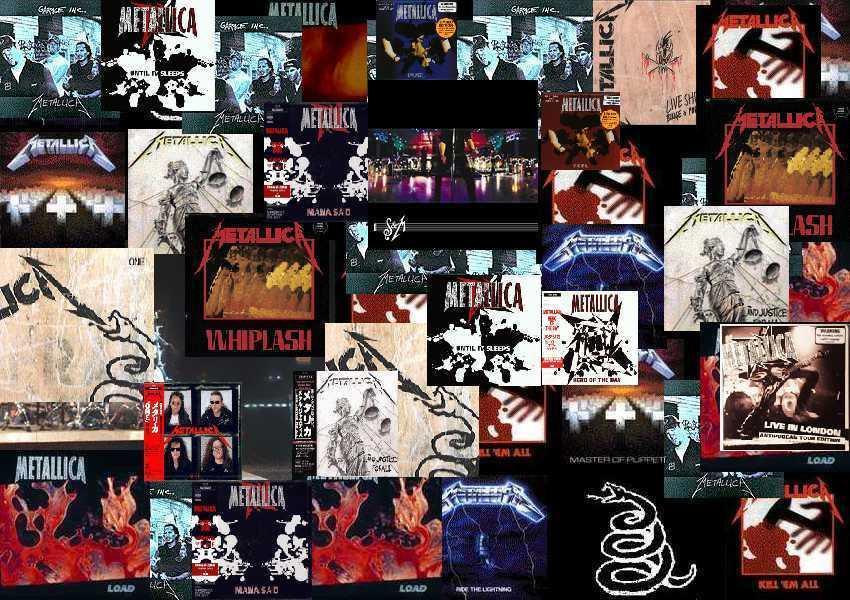

La discografía de Metallica, una banda de thrash metal fundada en San Francisco en 1981 por el guitarrista y vocalista James Hetfield y el batería Lars Ulrich,1 consiste en diez álbumes de estudio, cinco en directo, cinco EP y numerosos sencillos y videoclips.
